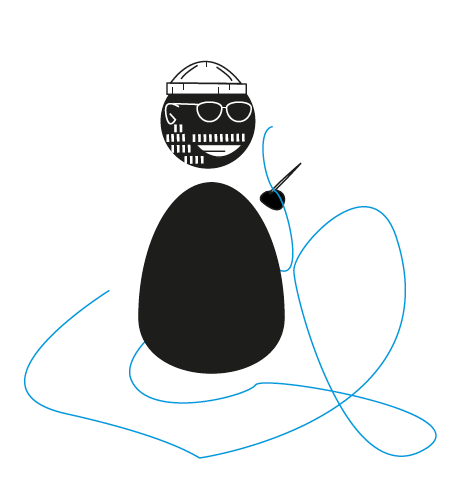

Tom van Deijnen est praticien autodidacte du textile ou docteur du textile, basé à Brighton, au Royaume-Uni. Il a tendance à utiliser la couture à la main pour fabriquer et réparer des objets contemporains.
 La demande: Concevoir un marqueur pour un couturier, associé à des principes visuels déclinables sur internet,boutique, emballage....
L'identité doit faire reconnaître son activité et ses valeurs.
La lettre intervient dans la forme pour illustrer l’idée que Tom of Holland intervient sur le produit. Pour rappeler le sujet de la broderie, au lieu de prendre de simple carrée j’ai décidé de vectoriser un bout de tissu. En rajoutant une «trame» pour dessiner la forme de la lettre, on retrouve à présent le côté broderie et intervention de Tom of Holland.
Principes déclinables.
(réalisable avec des tampons de couleurs pour les coutures et un grand tampon pour le logotype.)
Projet fictif